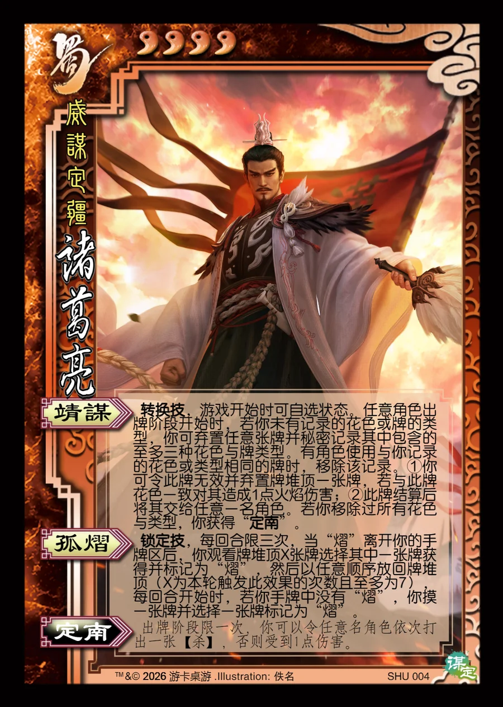

点击卡面查看大图
蜀
谋诸葛亮
♥4威谋定疆
靖谋转换技
转换技，游戏开始时可自选状态。任意角色出牌阶段开始时，若你未有记录的花色或牌的类型，你可弃置任意张牌并秘密记录其中包含的至多三种花色与牌类型。有角色使用与你记录的花色或类型相同的牌时，移除该记录。①你可令此牌无效并弃置牌堆顶一张牌，若与此牌花色一致对其造成1点火焰伤害；②此牌结算后将其交给任意一名角色。若你移除过所有花色与类型，你获得“定南”。
孤熠锁定技
锁定技，每回合限三次，当“熠”离开你的手牌区后，你观看牌堆顶X张牌选择其中一张牌获得并标记为“熠”，然后以任意顺序放回牌堆顶（X为本轮触发此效果的次数且至多为7），每回合开始时，若你手牌中没有“熠”，你摸一张牌并选择一张牌标记为“熠”。
定南衍生
出牌阶段限一次，你可以令任意名角色依次打出一张【杀】，否则受到1点伤害。